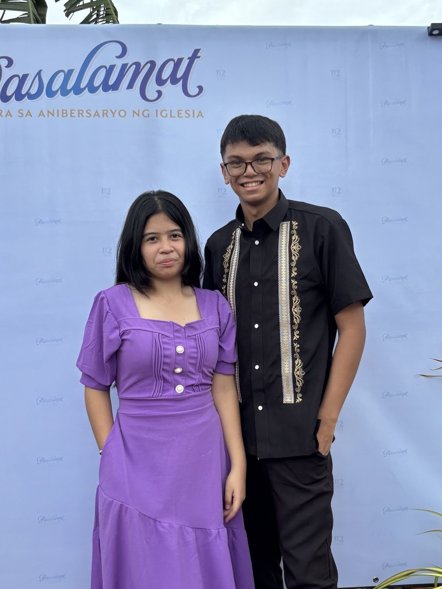
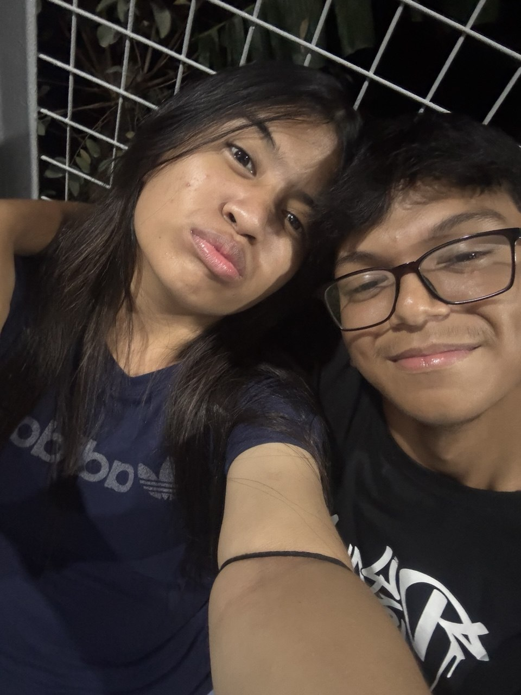
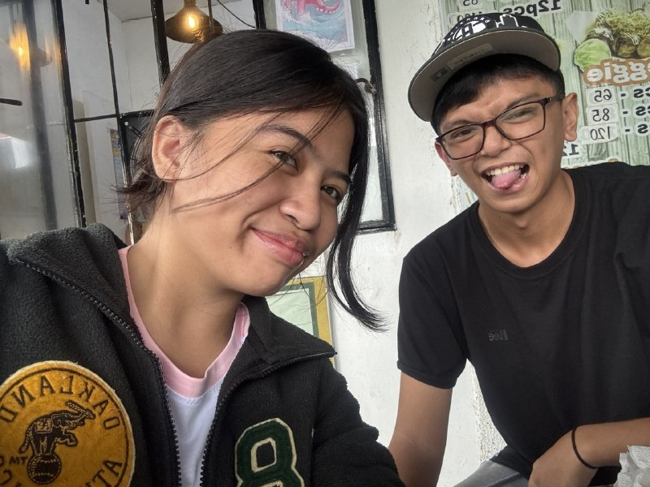
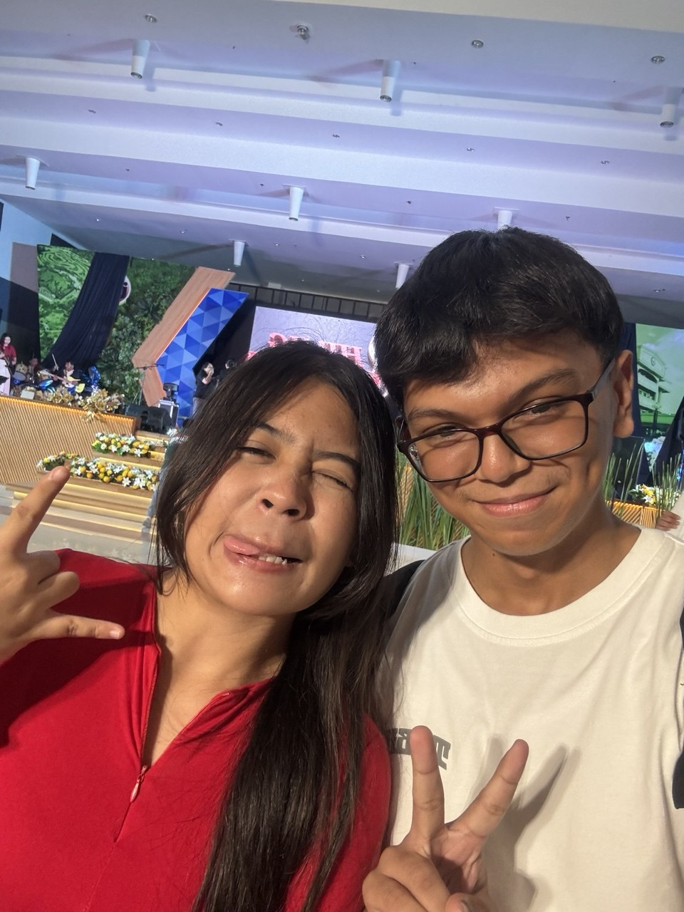
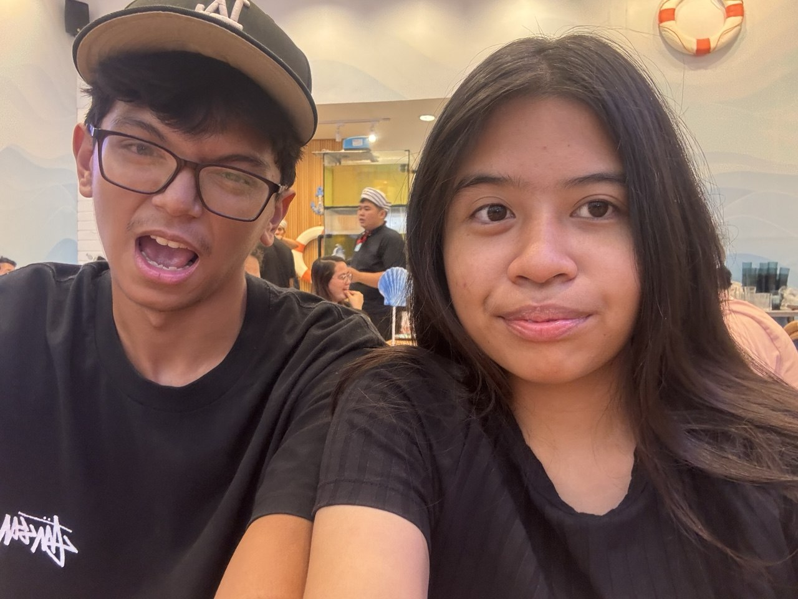

Dear Cha, First of all, I want to wish you a very happy birthday! You are an amazing person, and I feel so lucky to have you in my life. I hope this year brings you lots of happiness, love, and success. May all your dreams come true, and may you continue to shine bright like the star that you are. Enjoy your special day to the fullest! 💛 Grabe, I can't believe you're already 18! Time flies so fast. I hope this birthday is just the beginning of a wonderful year for you. This message is just a small token of my love and appreciation for you. I hope it brings a smile to your face and warmth to your heart. I'm really grateful for all the memories we've shared and the bond we have. You mean so much to me, and I can't wait to create more beautiful memories together. I hope na pabor pa rin sa atin ang tadhana and that we will always be there for each other, no matter what. You are truly special to me, and I cherish our friendship more than words can express. I'm still amazed at how much you've grown and accomplished over the years. You have so much potential, and I can't wait to see all the amazing things you'll achieve in the future. And also, I'm still devastated that hindi na tayo umabot sa relasyon natin, but I want you to know that I will always be here for you as a friend. I hope we can continue to support each other and be there for one another through thick and thin. And if ever man na makahanap ka na ng someone na magmamahal sa'yo ng buong puso, I hope na maging masaya ka at makahanap ka ng tunay na kaligayahan. You deserve nothing but the best in life, and I will always wish you happiness and love. :))). Sana hindi masira yung friendship natin, and I hope we can continue to be there for each other no matter what. You are truly an amazing person, and I feel blessed to have you in my life. No words can express how much you mean to me, but I hope this message gives you a glimpse of how much I care about you. You are a wonderful friend, and I am grateful for every moment we've shared together. Please know that you are loved and appreciated, not just by me, but by so many people whose lives you've touched. You have a heart of gold, and I hope you always remember that. I hope na sana hindi ulit tayo magkahiwalay, and that we can continue to be a part of each other's lives for many more years to come. You are truly one of a kind, and I feel lucky to have you as my friend. Excited na ako sa mga susunod na adventures natin together! I hope we can create more amazing memories and have lots of fun in the years to come. You are a true gem, and I feel blessed to have you in my life. Moreover, I really want to see you happy and fulfilled in life. You deserve all the love, joy, and success that the world has to offer. I hope you never forget how special you are and how much you mean to those around you. Furthermore, I want to thank you for being such an amazing friend. Your kindness, generosity, and positivity are truly inspiring, and I feel lucky to have you in my life. You make the world a better place just by being in it. Hindi pa rin ako makapaniwala na 18 ka na! Ang bilis ng panahon. I hope this birthday is just the beginning of a wonderful year for you. I hope na maging masaya ka sa lahat ng aspeto ng buhay mo, at that you will continue to grow and thrive in everything you do. Sana ikaw pa rin yung Cha na kilala ko, and that you will always stay true to yourself. You are an amazing person, and I hope you never forget that. I hope you appreciate this message and know that it comes from the heart. You are a wonderful friend, and I feel blessed to have you in my life. I hope this birthday is just the beginning of a fantastic year for you, filled with love, laughter, and all the things that make you happy. On this special day, I want to remind you that you are loved and appreciated by so many people. You have a heart of gold, and I hope you always remember that. You are an amazing person, and I feel lucky to have you in my life. Overall, I hope this birthday is just the beginning of a wonderful year for you. May all your dreams come true, and may you continue to shine bright like the star that you are. Happy birthday, Cha! 💛 Mahal na mahal kita, and I hope you have the best birthday ever! 🎉🎂💛 Love you twin! 💛




